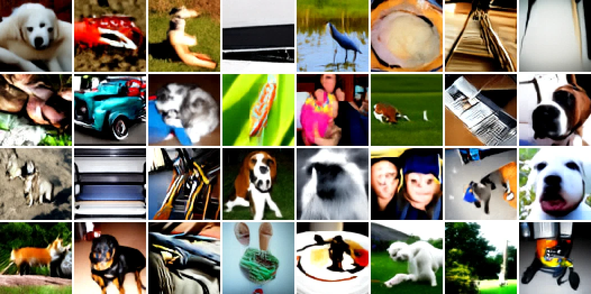
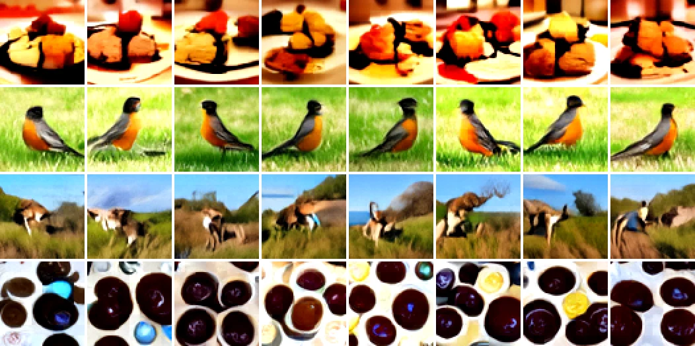
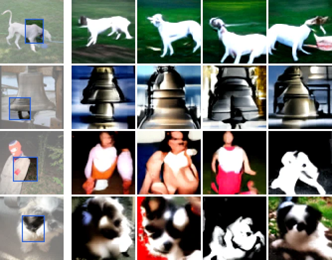
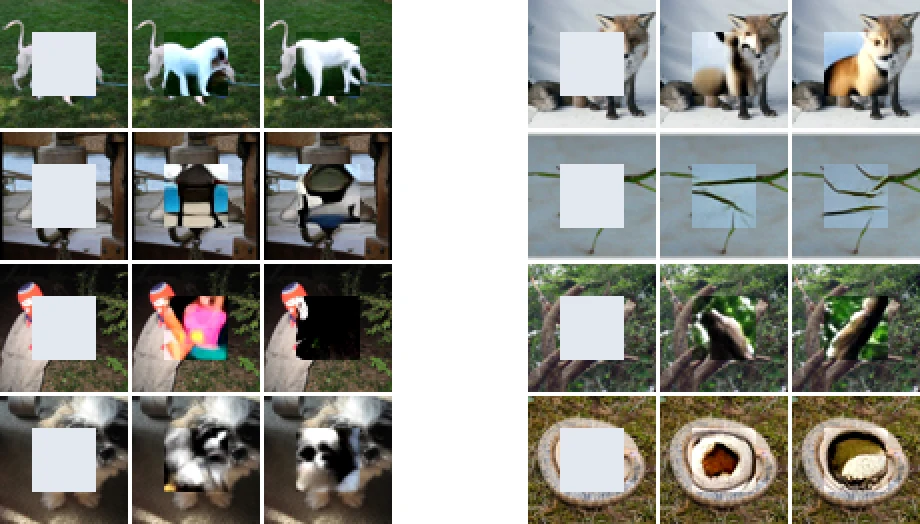

<style>
    :root { --rep: #2563eb; --emb: #7c3aed; --pix: #d97706; --grid: #ececef; --nz0: #ffffff; --nz1: #9ca3af; }
    @media (prefers-color-scheme: dark) {
        :root { --rep: #60a5fa; --emb: #a78bfa; --pix: #fbbf24; --grid: #222225; --nz0: #2c2c2f; --nz1: #d4d4d8; }
    }
    /* One media width for every figure: wider than the text on large screens, the column on phones. */
    .dem-media { margin: 0 0 16px; width: min(880px, 100vw - 2 * var(--gutter)); margin-left: calc(50% - min(440px, 50vw - var(--gutter))); }
    .dem-media img { display: block; width: 100%; height: auto; }
    .dem-media.narrow img { max-width: 668px; margin: 0 auto; }
    .dem-fig { margin: 0 0 48px; }
    .dem-fig figcaption, main .caption { margin: 0; color: var(--muted); font-size: 0.875rem; line-height: 1.5; }
    main section { margin-bottom: 88px; }
    main h2 { font-size: 1.25rem; margin-bottom: 12px; }
    .hero { padding: 72px 0 48px; }
    .dem-scroll { overflow-x: auto; }
    .dem-svg { display: block; width: 100%; height: auto; min-width: 540px; }
    .dem-svg text { font-family: var(--font); font-size: 15px; fill: var(--text); }
    .dem-svg .lb, .dem-svg .tick { font-size: 13px; fill: var(--muted); }
    .dem-svg .strong { fill: var(--text); font-weight: 600; }
    .dem-svg .sym { font-size: 20px; font-style: italic; }
    .dem-svg .sub { font-size: 12px; }
    .dem-svg .net { fill: var(--surface); stroke: var(--border); }
    .dem-svg .net-t { font-size: 17px; font-weight: 600; }
    .dem-svg .nd { fill: var(--bg); stroke-width: 2; }
    .dem-svg .nd-enc, .dem-svg .bars rect { stroke: var(--rep); }
    .dem-svg .bars rect { fill: var(--rep); stroke: none; }
    .dem-svg .nd-gen { stroke: var(--emb); }
    .dem-svg .tile { clip-path: inset(0 round 6px); }
    .dem-svg .ln { fill: none; stroke-width: 2; }
    .dem-svg .ln.enc { stroke: var(--rep); } .dem-svg .ln.gen { stroke: var(--emb); } .dem-svg .ln.dec { stroke: var(--pix); }
    .dem-svg .ahd { fill: var(--muted); }
    .dem-svg .nz0 { stop-color: var(--nz0); } .dem-svg .nz1 { stop-color: var(--nz1); }
    .dem-svg .u { transition: opacity 0.2s; }
    #dem-concept[data-use="enc"] .u:not(.enc), #dem-concept[data-use="gen"] .u:not(.gen), #dem-concept[data-use="dec"] .u:not(.dec) { opacity: 0.15; }
    .dem-svg .grid { stroke: var(--grid); }
    .dem-svg .axis { stroke: var(--muted); }
    .dem-svg .ax { font-size: 13px; fill: var(--text); }
    .dem-svg .pt { fill: var(--muted); opacity: 0.7; }
    .dem-svg .pt-ours { fill: var(--rep); }
    .dem-svg .lab { font-size: 13px; fill: var(--muted); }
    .dem-svg .lab-ours { font-size: 15px; font-weight: 600; fill: var(--rep); }
    .dem-svg .pt-g:hover .pt { opacity: 1; fill: var(--text); }
    .dem-uses { display: flex; flex-wrap: wrap; justify-content: center; gap: 8px; margin: 0 0 12px; }
    .dem-uses[hidden], .dem-use-text[hidden] { display: none; }
    .dem-uses button { font: inherit; font-size: 0.875rem; color: var(--text); background: none; border: 1px solid var(--border); border-radius: 999px; padding: 4px 14px; cursor: pointer; }
    .dem-uses button[aria-selected="true"] { border-color: var(--text); }
    .dem-use-text { text-align: center; color: var(--muted); font-size: 0.875rem; margin: 8px 0 0; min-height: 1.5em; }
</style>

<section>
    <figure class="dem-fig">
        <div class="dem-media"></div>
        <figcaption>Uncurated images generated without labels, by one network trained only by denoising.</figcaption>
    </figure>
</section>

<section class="intro">
    <p>For the past two years, I have worked on generative world models for control. In my <a href="/drift/">DRIFT</a> project, I found that the features of a denoising model are less suited to control. One explanation is that reconstruction does not produce invariant, abstract features. This is also part of why Yann LeCun favors joint-embedding methods such as <a href="https://openreview.net/forum?id=BZ5a1r-kVsf">JEPA</a> over generative models.</p>
    <p>I was mostly fascinated and consumed by diffusion models, so I went looking for a diffusion-native solution to both representation and generation. In this project, a single denoising objective trains one network to do both. The network generates representations and pixels, so representation learning and generation share one model and one objective. In this view, self-supervised learning becomes a form of generative modeling.</p>
</section>

<section id="abstract">
    <h2>Abstract</h2>
    <p>This paper shows that a generative model trained only by denoising can learn visual representations competitive with self-supervised learning and generate images without labels. Our approach is simple. In joint-embedding self-supervised learning, a network predicts the embedding of one view of an image from another view. We observe that this prediction is denoising at full noise, where the noisy embedding carries no information. We train the network on this <em>view-conditioned denoising</em> at all noise levels and call the result a <em>denoising embedding model</em> (DEM). A DEM is a diffusion model in representation space, with self-supervised prediction at its full-noise end. Without the view, the same network generates embeddings, and as a pixel denoiser it turns them into images. On ImageNet-100, DEM's linear probe exceeds that of <a href="https://arxiv.org/abs/2304.07193">DINOv2</a> at the same training length (76.1% against 72.8%). With a single network, it generates without labels at FID 26.1, against 22.9 for <a href="https://arxiv.org/abs/2312.03701">RCG</a>, which trains three separate models. We hope this simple model will motivate rethinking self-supervised learning as a form of generative modeling.</p>
    <p class="note">These are current results on ImageNet-100 at 64x64 resolution. They may change as the work progresses.</p>
</section>

<section id="method">
    <h2>Method</h2>
    <p>In joint-embedding learning, a network predicts the embedding of one view of an image from another view. Suppose the network also receives a noisy copy of the embedding it predicts. If the copy is pure noise, it carries no information, and the task reduces exactly to self-supervised prediction.</p>
    <figure class="dem-fig" id="dem-concept">
        <div class="dem-uses" role="tablist" aria-label="Uses of the network" hidden>
    <button type="button" role="tab" data-use="enc" aria-selected="false">Encode</button>
    <button type="button" role="tab" data-use="gen" aria-selected="false">Generate an embedding</button>
    <button type="button" role="tab" data-use="dec" aria-selected="false">Decode to pixels</button>
</div>
<p class="dem-use-text" aria-live="polite" hidden></p>
        <div class="dem-media dem-scroll"><svg class="dem-svg" viewBox="0 0 760 420" role="img" aria-labelledby="cd-t">
<title id="cd-t">One network with three uses. A view of the image goes in and the network outputs its embedding, the representation. Given a noisy embedding, the network outputs the denoised embedding, and without the view it generates embeddings from noise. Given an embedding and noisy pixels, it outputs an image. A noise-level axis below runs from no noise to full noise, where denoising the embedding is self-supervised prediction.</title>
<defs>
<marker id="ah" viewBox="0 0 10 10" refX="9" refY="5" markerWidth="7" markerHeight="7" orient="auto-start-reverse"><path d="M0 0L10 5L0 10z" class="ahd"/></marker>
<linearGradient id="nz" x1="0" x2="1"><stop offset="0" class="nz0"/><stop offset="1" class="nz1"/></linearGradient>
<filter id="noisy"><feTurbulence type="fractalNoise" baseFrequency="0.9" numOctaves="2" seed="3" result="t"/><feColorMatrix in="t" type="saturate" values="0" result="g"/><feBlend in="SourceGraphic" in2="g" mode="overlay"/></filter>
</defs>
<g class="u enc gen">
  <image href="tile_view.webp" x="70" y="34" width="72" height="72" preserveAspectRatio="none" class="tile"/>
  <text class="lb" x="106" y="124" text-anchor="middle">View x′</text>
</g>
<g class="u gen">
  <circle class="nd nd-gen" cx="106" cy="190" r="26"/><text class="sym" x="106" y="196" text-anchor="middle">z<tspan class="sub" dy="5">τ</tspan></text>
  <text class="lb" x="106" y="238" text-anchor="middle">Noisy embedding</text>
</g>
<g class="u dec">
  <image href="tile_sample.webp" x="70" y="262" width="72" height="72" preserveAspectRatio="none" filter="url(#noisy)" class="tile"/>
  <text class="lb" x="106" y="352" text-anchor="middle">Noisy pixels, given ẑ</text>
</g>
<rect class="net" x="290" y="40" width="180" height="290" rx="14"/>
<text class="net-t" x="380" y="180" text-anchor="middle">One network</text>
<text class="lb" x="380" y="204" text-anchor="middle">Transformer</text>
<g class="u enc"><path class="ln enc" d="M150 70 H286" marker-end="url(#ah)"/><path class="ln enc" d="M474 70 H600" marker-end="url(#ah)"/>
  <rect class="nd nd-enc" x="604" y="52" width="72" height="36" rx="6"/>
  <g class="bars"><rect x="614" y="62" width="6" height="16"/><rect x="624" y="66" width="6" height="12"/><rect x="634" y="60" width="6" height="18"/><rect x="644" y="68" width="6" height="10"/><rect x="654" y="63" width="6" height="15"/></g>
  <text class="lb" x="640" y="110" text-anchor="middle">Embedding, the representation</text>
</g>
<g class="u gen"><path class="ln gen" d="M150 120 C210 120 230 175 286 182" marker-end="url(#ah)"/><path class="ln gen" d="M134 190 H286" marker-end="url(#ah)"/><path class="ln gen" d="M474 190 H612" marker-end="url(#ah)"/>
  <circle class="nd nd-gen" cx="640" cy="190" r="26"/><text class="sym" x="640" y="196" text-anchor="middle">ẑ</text>
  <text class="lb" x="640" y="238" text-anchor="middle">Denoised embedding</text>
</g>
<g class="u dec"><path class="ln dec" d="M150 298 H286" marker-end="url(#ah)"/><path class="ln dec" d="M474 298 H600" marker-end="url(#ah)"/>
  <image href="tile_sample.webp" x="604" y="262" width="72" height="72" preserveAspectRatio="none" class="tile"/>
  <text class="lb" x="640" y="352" text-anchor="middle">Image</text>
</g>
<g class="u gen axis-g">
  <rect x="150" y="384" width="460" height="10" rx="5" fill="url(#nz)"/>
  <text class="lb" x="150" y="374">no noise</text>
  <text class="lb" x="610" y="374" text-anchor="end">full noise</text>
  <text class="lb strong" x="610" y="414" text-anchor="end">full noise = self-supervised prediction</text>
  <text class="lb" x="150" y="414">noise level of z<tspan class="sub" dy="4">τ</tspan></text>
</g>
</svg></div>
        <figcaption>Denoising in embedding space turns joint-embedding prediction into a generative model.</figcaption>
    </figure>
    <p>We train the network on this view-conditioned denoising at all noise levels. Without the view, it samples embeddings as a representation generator, and as a pixel denoiser it turns them into images. Its features also serve as the image representation.</p>
</section>

<section id="results">
    <h2>Results</h2>
    <figure class="dem-fig">
        <div class="dem-media dem-scroll"><svg class="dem-svg" style="min-width: 460px" viewBox="0 0 640 350" role="img" aria-labelledby="sc-t">
<title id="sc-t">Linear probe accuracy on ImageNet-100 against FID without labels. DEM has the highest probe and the second lowest FID. Single-task methods sit on the N/A lanes.</title>
<line class="grid" x1="110.4" y1="24" x2="110.4" y2="300"/><text class="tick" x="110.4" y="322" text-anchor="middle">N/A</text><line class="grid" x1="183.2" y1="24" x2="183.2" y2="300"/><text class="tick" x="183.2" y="322" text-anchor="middle">70</text><line class="grid" x1="264.1" y1="24" x2="264.1" y2="300"/><text class="tick" x="264.1" y="322" text-anchor="middle">60</text><line class="grid" x1="345.0" y1="24" x2="345.0" y2="300"/><text class="tick" x="345.0" y="322" text-anchor="middle">50</text><line class="grid" x1="425.9" y1="24" x2="425.9" y2="300"/><text class="tick" x="425.9" y="322" text-anchor="middle">40</text><line class="grid" x1="506.8" y1="24" x2="506.8" y2="300"/><text class="tick" x="506.8" y="322" text-anchor="middle">30</text><line class="grid" x1="587.6" y1="24" x2="587.6" y2="300"/><text class="tick" x="587.6" y="322" text-anchor="middle">20</text><line class="grid" x1="70" y1="275.8" x2="620" y2="275.8"/><text class="tick" x="60" y="279.8" text-anchor="end">N/A</text><line class="grid" x1="70" y1="227.4" x2="620" y2="227.4"/><text class="tick" x="60" y="231.4" text-anchor="end">40</text><line class="grid" x1="70" y1="178.9" x2="620" y2="178.9"/><text class="tick" x="60" y="182.9" text-anchor="end">50</text><line class="grid" x1="70" y1="130.5" x2="620" y2="130.5"/><text class="tick" x="60" y="134.5" text-anchor="end">60</text><line class="grid" x1="70" y1="82.1" x2="620" y2="82.1"/><text class="tick" x="60" y="86.1" text-anchor="end">70</text><line class="grid" x1="70" y1="33.7" x2="620" y2="33.7"/><text class="tick" x="60" y="37.7" text-anchor="end">80</text>
<line class="axis" x1="70" y1="300" x2="620" y2="300"/><line class="axis" x1="70" y1="24" x2="70" y2="300"/>
<text class="ax" x="345" y="346" text-anchor="middle">FID without labels (lower is better, right)</text>
<text class="ax" transform="translate(16 162) rotate(-90)" text-anchor="middle">Linear probe (%)</text>
<g class="pt-g"><title>DINOv2: probe 72.8%, FID N/A</title><circle class="pt" cx="110.4" cy="68.5" r="5"/><a href="https://arxiv.org/abs/2304.07193"><text class="lab" x="122.4" y="73.5" text-anchor="start">DINOv2</text></a></g><g class="pt-g"><title>BYOL: probe 70.1%, FID N/A</title><circle class="pt" cx="110.4" cy="81.6" r="5"/><a href="https://arxiv.org/abs/2006.07733"><text class="lab" x="122.4" y="86.6" text-anchor="start">BYOL</text></a></g><g class="pt-g"><title>I-JEPA: probe 39.7%, FID N/A</title><circle class="pt" cx="110.4" cy="228.8" r="5"/><a href="https://arxiv.org/abs/2301.08243"><text class="lab" x="122.4" y="239.8" text-anchor="start">I-JEPA</text></a></g><g class="pt-g"><title>MAE: probe 43.1%, FID N/A</title><circle class="pt" cx="110.4" cy="212.4" r="5"/><a href="https://arxiv.org/abs/2111.06377"><text class="lab" x="122.4" y="213.4" text-anchor="start">MAE</text></a></g><g class="pt-g"><title>JiT (uncond.): probe N/A, FID 64.0</title><circle class="pt" cx="231.8" cy="275.8" r="5"/><a href="https://arxiv.org/abs/2511.13720"><text class="lab" x="243.8" y="280.8" text-anchor="start">JiT (uncond.)</text></a></g><g class="pt-g"><title>RCG (DINOv2 enc.): probe N/A, FID 22.9</title><circle class="pt" cx="564.2" cy="275.8" r="5"/><a href="https://arxiv.org/abs/2312.03701"><text class="lab" x="550.2" y="266.8" text-anchor="end">RCG (DINOv2 enc.)</text></a></g><g class="pt-g"><title>MAGE: probe 35.4%, FID 67.9</title><circle class="pt" cx="200.2" cy="249.6" r="5"/><a href="https://arxiv.org/abs/2211.09117"><text class="lab" x="212.2" y="254.6" text-anchor="start">MAGE</text></a></g><g class="pt-g"><title>DEM: probe 76.1%, FID 26.1</title><circle class="pt-ours" cx="538.3" cy="52.6" r="8"/><text class="lab-ours" x="524.3" y="57.6" text-anchor="end">DEM</text></g>
</svg></div>
        <figcaption>One generative model learns representations competitive with self-supervised methods and generates images without labels.</figcaption>
    </figure>
    <div class="table-wrap">
        <table>
            <thead>
                <tr><th></th><th>DEM</th><th>Baseline</th></tr>
            </thead>
            <tbody>
                <tr><td>Linear probe</td><td>76.1%</td><td>72.8% (<a href="https://arxiv.org/abs/2304.07193">DINOv2</a>)</td></tr>
                <tr><td>FID-50k without labels</td><td>26.1</td><td>22.9 (<a href="https://arxiv.org/abs/2312.03701">RCG</a>, three models)</td></tr>
            </tbody>
        </table>
    </div>
    <p class="caption">ImageNet-100, 64x64, current results.</p>
</section>

<section id="one-embedding">
    <h2>One embedding, many images</h2>
    <p>The embedding is learned from views of the image. It can therefore stay invariant to color and framing, while the pixel denoiser reproduces these variations.</p>
    <figure class="dem-fig">
        <div class="dem-media"></div>
        <figcaption>Each row decodes one sampled embedding with different pixel noise.</figcaption>
    </figure>
</section>

<section id="completion">
    <h2>Completing a crop</h2>
    <p>Below full noise, samples spread more as the view shows less of the image. A small crop fits many images, so the embeddings sampled from it decode to different images.</p>
    <figure class="dem-fig">
        <div class="dem-media narrow"></div>
        <figcaption>The first column shows the crop in a blue box, and the others show images decoded from sampled embeddings.</figcaption>
    </figure>
</section>

<section id="inpainting">
    <h2>In-painting</h2>
    <p>If we keep the visible pixels while sampling, DEM fills in a hidden region without being trained for this task.</p>
    <figure class="dem-fig">
        <div class="dem-media"></div>
        <figcaption>Each triple shows the input with its centre hidden and two samples. The examples are uncurated.</figcaption>
    </figure>
</section>

<script>
(function () {
  var fig = document.getElementById("dem-concept");
  var bar = fig.querySelector(".dem-uses"), out = fig.querySelector(".dem-use-text");
  var text = {
    enc: "The network embeds a view of the image. The embedding is the representation.",
    gen: "Given a noisy embedding and a view, the network denoises it. Without the view, it generates embeddings from noise.",
    dec: "As a pixel denoiser, the network turns an embedding into an image."
  };
  bar.hidden = false;
  bar.addEventListener("click", function (e) {
    var b = e.target.closest("button"); if (!b) return;
    var on = fig.dataset.use === b.dataset.use ? "" : b.dataset.use;
    fig.dataset.use = on;
    bar.querySelectorAll("button").forEach(function (x) { x.setAttribute("aria-selected", x.dataset.use === on); });
    out.hidden = !on; out.textContent = on ? text[on] : "";
  });
})();
</script>
